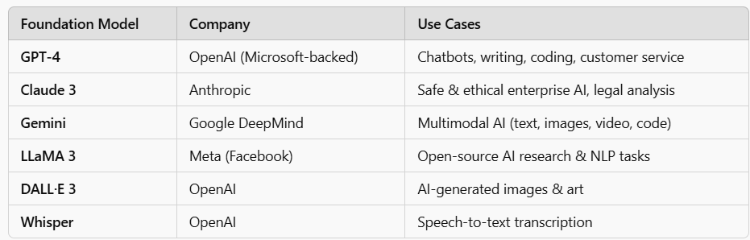
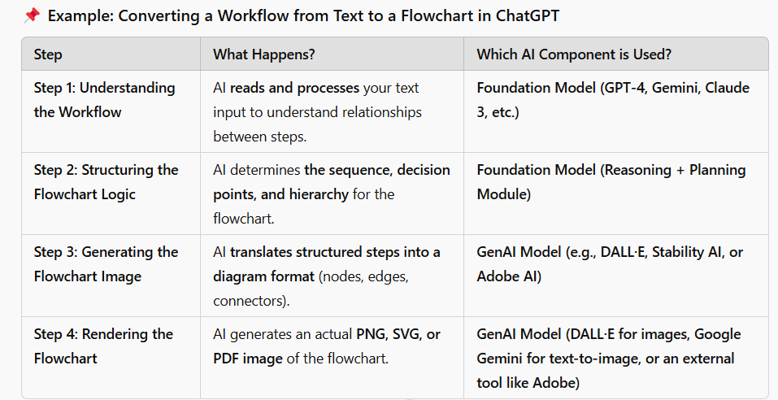
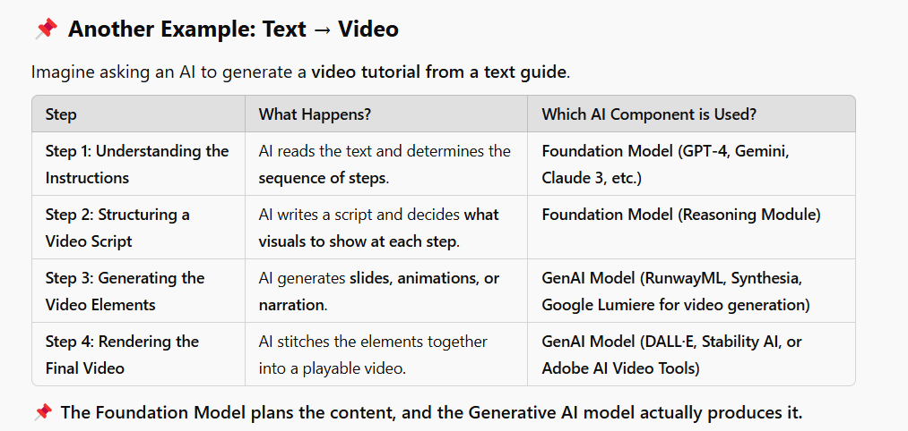

AI Concepts and Terminology
This document summarizes key AI and Machine Learning concepts in a structured format. The content reflects a deep dive into various methodologies, ensuring clarity and application in real-world scenarios.
1. AI → The field of science and computer aimed at making smart machines or The broad field that enables machines to perform tasks requiring intelligence.
2. ML → A subset of AI where models learn from data instead of following fixed rules. example - Netflix recommendations.
3. Deep Learning A subset of ML that uses neural networks with multiple layers to learn complex patterns.
4. Foundation
Models These
are models developed using Deep Learning methodologies that serve as base for
many GenAI models . They are massive pre-trained on huge datasets. Think of
this as General purpose.
Example:

Companies can buy these models and Use Tuning of Foundation models when AI needs permanent enterprise knowledge
5. Gen AI (Generative AI) Is a specific form of deep learning that creates/generates data. This data is either text, image, music and code, aka GenAI is one of the advanced use cases . Fine tuned for specific need
Note: 1. Every GenAI model is built on a Foundation Model, but not every Foundation Model is used for GenAI. Think of Foundation model as BRAIN and GenAI as Content Creator
2. GenAI is one of the many applications that come from foundation models
3. GPT-3/4 is a foundation model and chatGPT is a GenAI model
4. High-level flow


6. Data Science → Using ML, statistics, and programming to find patterns in data (Business analytics, Forecasting).
7.
RAG(Retrieval-Augmented
Generation) is an AI technique that
enhances LLMs by retrieving relevant external data before generating responses.
Instead of relying only on pre-trained knowledge, RAG enables models like
GPT-4, Claude, or Gemini to fetch
live, real-time information from business systems, databases, or documents.
Detailed workflow here
Lets say a User asks this question in enterprise chatbot: "Give
me the latest revenue report for Q3 2023."
Without
RAG: AI can only respond based on old, pre-trained data.
With
RAG: AI retrieves the latest revenue
data from Snowflake, inserts it into the prompt, and generates
an accurate answer.
To Represent it in a diagram
8. State Space A state space is all the possible situations a system can be in
9.
Transitions(Moving Between
States) how we move from one state
to another
10. Cost(the price to move between states) how expensive to move from
one state to another
11. Heuristics = Ais version of a WHERE condition
Without heuristics, AI wastes time checking everything.
With heuristics, AI focuses only on the best options, making decisions faster.
3 Ways AI Generates
Heuristics
o
Traditional
AI : Humans define the rules example: Chess AI Always Protect the King
o
Machine
Learning : AI Learns by analyzing historical data. example: Waze learns best
roads based on past traffic data. Potential Problem is if the supplied data is
skewed heuristics will also be skewed
o Reinforcement Learning : AI
learns by trial and error. example: If Social media AI keeps recommending the
same content it can be dangerous. Potential Problem AI creates its own rules
which can be dangerous as it
12. Bayes Algorithm and Nave Bayes classifier
Bayes Algorithm → "Update your probability step by step as you
write new WHERE conditions.".
Nave Bayes Classifier → "Dont stop! Keep filtering until youve used
all relevant columns!"
The Likelihood Ratio helps us decide if new evidence
makes our outcome more or less likely.
Note:
1. AI should not limit itself to the original
information.
2. AI should update its decision at every step as it
gets new data.
3. AI should keep considering all the
features/available data points.
Whenever we start analyzing a table, we have a business
question in mind, such as:
1. What color are most of my leafy
vegetables?
2. Where are my vegetables usually
placed?
But along the way of this analysis we will
be adding conditions to our initial where clause to figure out the solution
what it means is we consider the original information and build on top. We do
NOT discard what any old information Bayes & Nave Bayes are methodologies/processes
that guide this analysis.
1. AI updates its prediction based on this analysis.
2. If AI was initially 80% sure a vegetable was green, now it becomes more sure (closer to 95%) when it sees it's leafy.
3. If we keep analyzing more columns (like location, weight, freshness), we refine our predictions even further!
13. AI Learning Terms
a.
Supervised
Learning Like a
student learning from a teacher with answer keys.
i. AI gets a dataset where every email is labeled as "Spam" or "Not Spam."
ii. AI learns patterns from features (words like "win," "lottery," etc.).
iii. Once trained, AI can predict
whether new emails are spam.
Example: Spam Detection
b.
Unsupervised
Learning Like a
student exploring patterns without a teacher.
i. AI is given raw data with no predefined categories.
ii. It looks for natural patterns and groups (clusters) in the
data.
iii. For example, AI might find that
certain customers tend to buy luxury items while others buy budget
itemswithout being told.
Example: Customer Segmentation
c.
Reinforcement
Learning Like
learning from trial and error (video game style).
i. AI takes actions and
gets rewards or penalties based on success.
ii. It tries different
strategies and learns what works best over time.
iii. Like a video game character learning how to get a high score!
Example: Self-driving cars
d.
Semi-Supervised
Learning Like a
student getting a mix of teacher guidance and self-learning.
i. Some data is labeled (Supervised), and the rest is unlabeled
(Unsupervised).
ii. AI learns from the labeled data first, then applies what it
learned to unlabeled data.
iii. This is useful when labeling data is expensive or difficult (like in medical research).
Example: Medical Imaging (some
labeled and some not)
14. Supervised Learning
Lets understand Regression, Linear
Regression and Logistic Regression with an example scenario : I want to know/goal is to find if
my friend would say "Yes" or "No" to playing Soccer today.
I consider 2 parameters weather, homework.
Regression is Finding Relationship between
factors(weather, homework) : Sunny Score
Homework Score (Formula I want to use or define)
Linear
Regression is used
to predict numbers . Using the regression and the table below we know linear
regression is working because it is predicting the number example
|
Sunny
Score |
Homework
Score |
Probability/Linear
Regression Answer |
|
120(beautiful
weather to play) |
0 (no
homework) |
120 |
|
20(weather
is good only for 1hr) |
70(my
friend has bunch of homework to finish) |
-50 |
|
100(good
weather) |
20(little
homework) |
80 |
however probability can NEVER be 120, -50
this is where Logistic Regression: comes into play where it limits the
boundaries to 0 100 by applying sigmoid function(s-curve) , the same table
above becomes
|
Sunny
Score |
Homework
Score |
Probability/Linear
Regression Answer |
Logistic
Regression |
|
120(beautiful
weather to play) |
0 (no
homework) |
120 |
99% |
|
20(weather
is good only for 1hr) |
70(my
friend has bunch of homework to finish) |
-50 |
0% |
|
100(good
weather) |
20(little
homework) |
80 |
80% |
a.
Overfitting
Overfitting occurs when the model memorizes training data instead of understanding real-world patterns.
Analogy
i. "Good student" (Well-trained model) →
Understands concepts and can answer any question, even new ones.
ii. "Overfitting student" (Overfitted model) →
Memorizes past exam questions but fails when asked a new question
b.
Nearest
Neighbor
Supervised version can
predict if a customer will like a movie or not
15. Unsupervised Learning
Means we do not know correct answers so we cannot train the model on training dataset and test it on test dataset. Unsupervised learning identifies some structure in the provided data example: Identifying customers are Budget , Median , Luxury .
AI tries to find common structure/pattern/looks for similarities in the provided data
a. Common in clustering is K-Means
b. GANS: Also identifies patterns/structures in the data but they dont just group them they create entirely new data . Example : Deep fakes, ai generated faces
16. Neural Network
A team of tiny workers making smart decisions together. It takes input(data) thinks in layers/processes in layers spits out a result.
Each Neuron is tasked to a subset of the task similar to a method in a java function.
Depending on the requirement/task at hand we use certain activation function. Example: if the task is to predict yes/no we do not use softmax as it changes the result and also over engineering sometimes.
Microservices architecture can be used as an analogy to a neural network.
Commonality between Neural Network and MicroService
Both systems break a large problem
into smaller, independent components.
Each unit (neuron or microservice) processes inputs and
produces outputs.
Each unit has a specialized function (activation function in
neural networks, business logic in microservices).
Both systems scale by adding more units (neurons in deep learning, microservices in cloud architecture).
Whats different
In microservices, each service has
its own memory, storage, and CPU.
In neural networks, neurons do not store full memory but adjust weights/biases dynamically
How does neural networks work
Example : we want to train a
neural network to predict if it rains or not based on 2 inputs/parameters . a.
Cloudiness (more cloud
higher chance of rain) b. Humidity(higher humidity higher chance of rain)
Step1: NN assigns random weights to
parameter (a) & (b) & bias value(extra adjustment imagine taking a
tutor help to find answers)
Step2: NN is fed with a lot of historic
weather data(Assume it is of the format
key,date,clouds,humidity,rain are the columns of the data)
Step3: NN spits the data in step2 into
training dataset and test dataset
Step4: NN starts training
itself/running in a loop to look at these 2 parameters in the old data and see
the column where it rains
Step5: NN understands that humidity was
the closer parameter to predict if it would rain : similar to wht a human being
would do
Step6: NN readjusts the weights and
bias , example it gives more importance/weightage to humidity and comes up with
values for the parameters (a) humidity (b) cloudiness (c) bias
Step7: NN runs against the test data
using the weights, bias determined in step6, if it is close it confirms the
parameters value and if not repeats step 4 to 6
Step8: NN then locks the values of the
weights and bias and then is READY to accept new values
Important Terms in Neural networks
1. Weights/Weightage Numerical value giving importance to importance of the parameters bcz NOT all parameters have same impact on the output
2. Bias Extra adjustment allowed which cannot be explained or controlled by weights,(2) it exists because it makes the model better predict when all inputs are zero. example: base salary in a job no matter if you get bonus or not you will get base salary
3.
If
a system has 100 neurons not every neuron is designed ot accept same input,
gives same output , example: few methods can be heavy with business logic and
few methods can be as simple as connecting to a database
4.
Backpropagation
: the system runs multiple times and comes up with an output if it is not
matching it readjusts weights or bias. Example: Identifying an image as a cat
or a dog. If iteration 1 predicts cat but the image is tagged as dog it
backtracks and adjusts the parameters to change the result to a dog for 2nd
iteration. This backtracking is called backpropagation.
5.
Activation
Functions are the OUTPUT/RETURN values of each neuron. There are these types of
outputs expected in any neuron
|
Activation
Function |
Analogy |
Best For |
Comments |
|
Step |
ON/OFF switch |
Simple Yes/No |
It is likea Boolean value can only be yes or no |
|
Sigmoid |
Deciding to take
an umbrella. If it rains we take it (100%) , if it doesnt dont take it
(0%), 50%chance of rain we think about it |
|
Scales an output
between 0 and 1 probability |
|
ReLU(Rectified
Linear Unit) |
If we work extra
hours we get bonus pay but if we do not work extra hours we do get salary but
not -VE salary |
Image
Processing, Deep learning |
Chance that all
the neurons can be dead |
|
Leaky ReLU(Small
-ve values also matter) |
If a student
performs well he gets good marks but he does poorly instead of giving 0 we
give him 10% as partial credit |
Solving ReLU |
|
|
Tanh Function |
In feedback
system if good review 1 , bad review -1 and neutral :0 |
RNNs, Text to
Speech |
Problem with
above functions is they are al between 0 and 1 -it may not work for all
scenarios |
|
Softmax |
Choosing a
movie(Action/Drama/Thriller) recognizing different objects in a image |
Multi-Class
classification(handwriting recognition, image classification) |
Similar to
Netflix Recommendation |
6.
One
type of neural network is CNN(Convolutional Neural Network) which is majority
usecase is to identify face recognition, object detection . . It does NOT create
new images
Imagine we are going to train our model to predict if I a image is a
cats or dogs
Step1: CNN is fed with data of lot of cats and dogs and it divides the
dataset in to training and test dataset which as metadata about the image (if
it is a cat image or dog image)
Step2: CNN input layers/input neurons accept the image
Step3: CNN early layers/early neurons detects basic patterns likes
lines/edges/curves , imagine creating a table that says
|
Image_lable |
Line_Feature |
Edge_Feature |
Curve_Feature |
|
Cat_1.jpg |
1 |
1 |
1 |
|
Cat_2.jpg |
1 |
1 |
1 |
|
Dog_1.jpg |
1 |
0 |
0 |
|
Dog_2.jpg |
1 |
0 |
0 |
|
|
|
|
|
Step4: CNN mid layers/mid neurons combine these features into shapes
such as round eyes,pointy ears,whiskers
|
Image_lable |
Round_Eyes |
Point_Ears |
Whiskers |
|
Cat_1.jpg |
1 |
1 |
1 |
|
Cat_2.jpg |
1 |
1 |
1 |
|
Dog_1.jpg |
1 |
0 |
0 |
|
Dog_2.jpg |
1 |
0 |
0 |
|
|
|
|
|
Step5: CNN final layers/final neurons combine all features and say if it
is a dog or a cat
7.
Another Prominent Neural network is GAN which learns from
the images supplied and CREATES new images like deep fake.
Same methodlogy or workflow is used in GAN.
Better images are created bcz it uses (a) Adversarial
Network (b) Generative Network . Generative Network creates images based on
learnings on training dataset and Adversarial Network performs checks and
refines the output aka one does create and 2nd one counters and asks
the 1st one to improve. Both
(a) and (b) are trained on same network so (a) is also super important if
this cannot give proper feedback whatever (b) generates is considered good
8.
Transformer
Neural Networks Basis for ChatGPT and other LLMs in the market
step1: Attention Mechanism: Pays more
attention to important words. Used in
Text summarization , Chatbots
When it reads the complete
sentence it assigns Attention Scores.
Attention scores are calculated using
a.
AI
learns from millions of sentences during training
b.
It
checks which words often affect the meaning of sentences. NOTE: Not all models
are trained to understand sarcasm. Models have to be trained on sarcasm
sentences
c.
adjusts
attention scores using backpropagation
Models are trained on
millions of sentences before which understands the attention scores to be given
Read through how Attention
Mechanism work here
step2: Transformer Architecture : Reads the complete
sentence into the model at the same time like what chatgpt does
step3: GPT (Generative Pretrained
Transformer): Transformer that learns before talking
Analogy is a student and exam.
Student learns before the exam and do not open the books while answering in the
exam.
Read through : How GPT works here
step4: LLM (Large Language Model)
GPT are LLM because they are
trained on large amounts of texts
NOT all LLM are GPTs example:
Claude 3 and Gemini as they follow different training philosophies even though
they use transformers.
LLM Comparison here
17. Generative AI(GenAI)
Generates data by using Deep
Learning models like
1.
GANs(Generative Adversarial Network) used for image generation (deepfakes, ai art)
2.
Transformers(like GPT & Gemini) Used for text generation (ChatGPT,Claude, Gemini)
3.
Diffusion Models Used for image generation (dall -e, stable diffusion)
Why Does AI Sometimes Give Wrong Attention Scores?
AI learns from patterns in training data, but if sarcasm, jokes, or rare sentence structures are underrepresented, it might focus on the wrong words.
Example of Wrong Attention Scoring:
Sentence: "Oh wow, another Zoom meeting. Can't
wait." (Sarcasm)
AI without proper training might assign:
|
Word |
Attention Score
(Incorrect) |
|
Oh |
0.1 |
|
Wow |
0.8 (Wrong, because "Wow" is often positive) |
|
Another |
0.3 |
|
Zoom |
0.4 |
|
Meeting |
0.6 |
|
Can't |
0.2 (Wrong, because "Can't" flips the meaning) |
|
Wait |
0.7 (Wrong, because AI might see "Wait" as a positive sign) |
Expected Human-like Attention Scores:
|
Word |
Attention Score
(Better) |
|
Oh |
0.1 |
|
Wow |
0.5 (Might be sarcastic) |
|
Another |
0.6 |
|
Zoom |
0.7 |
|
Meeting |
0.8 (Main subject) |
|
Can't |
0.9 (Flips the meaning) |
|
Wait |
0.1 (Should be low, indicating sarcasm) |
Problem? AI without sarcasm training mistakenly thinks this sentence is excited instead of frustrated.
How is This Fixed?
Massive Training Data:
Sentiment-Aware Training:
Context-Aware Attention Models:
Multi-Modal AI (Text + Voice + Emotion)
Think of GPT like a student preparing for an exam.
Step 1: Pretraining (The "Study Phase")
GPT reads and processes massive text data (books, Wikipedia, research papers).
It
does not memorize exact sentences but learns patterns,
structures, and relationships between words.
This phase takes weeks or months using powerful supercomputers.
Example:
Step 2: Fine-Tuning (Improving the Model)
The model is fine-tuned for specific use cases (like answering questions, writing code, etc.).
AI
researchers give it additional training data to make it more
useful and less biased.
This step also includes human reviewers rating AI responses.
Example:
Step 3: Inference (Giving Answers in Real-Time)
When
we ask a question, GPT does NOT search the internet!
It retrieves knowledge from its trained neural network and generates a response based on probabilities.
It predicts the next best word by using statistical patterns from training.
Example:
Comparing the Three (GPT, Claude,
Gemini)
|
Feature |
GPT (OpenAI) |
Claude (Anthropic) |
Gemini (Google) |
|
Training Method |
Pretrained Transformer |
Constitutional AI |
Multimodal AI |
|
Best For |
General chat, coding, writing |
Ethical AI, long documents, safe responses |
Handling text, images, videos together |
|
Weaknesses |
Can be biased, needs human fine-tuning |
Not as strong in creative writing |
Not as optimized for long conversations yet |
|
Strengths |
Best for generating human-like responses |
Safest AI with fewer biases |
Best for multimodal tasks (image+text+video) |
Key Differences in Training & Architecture
|
Feature |
GPT (OpenAI) |
Claude 3 (Anthropic) |
Gemini (Google DeepMind) |
|
Uses Transformer? |
Yes |
Yes |
Yes |
|
Pretrained First? |
Yes |
Yes |
Yes |
|
Why Not Called GPT? |
Because "GPT" is OpenAI's branded approach. |
Uses Constitutional AI, a different training
method. |
Uses Multimodal AI, optimized for text, images, and
video. |
|
Training Philosophy |
Human-labeled datasets + Reinforcement Learning from Human
Feedback (RLHF). |
Self-correcting "ethical rules" (Constitutional
AI). |
Trained from the start to handle multiple data types (text
+ images + video + audio). |
Final Recommendation for Enterprise
Chatbots
|
LLM |
Best For Enterprise Use? |
Strengths |
|
Claude 3 (Anthropic) |
Best for
ethical, legal, and long-form enterprise chatbots. |
Ethical AI, compliance, long-term reasoning. |
|
GPT-4 (OpenAI) |
Best for
creative, customer service, and coding-related chatbots. |
Content creation, software development, general Q&A. |
|
Gemini (Google) |
Best for
multimodal (text + images + voice) enterprise chatbots. |
Image recognition, multilingual support, business
automation. |
1. User asks a question → "What were our top sales regions last
quarter?"
2. AI retrieves relevant enterprise data from Snowflake, SharePoint, Confluence, or other systems by connecting to enterprise data
3. The retrieved data is inserted into the AI model's prompt (context enrichment).
4.
AI generates a response based
on both pre-trained knowledge + retrieved data.